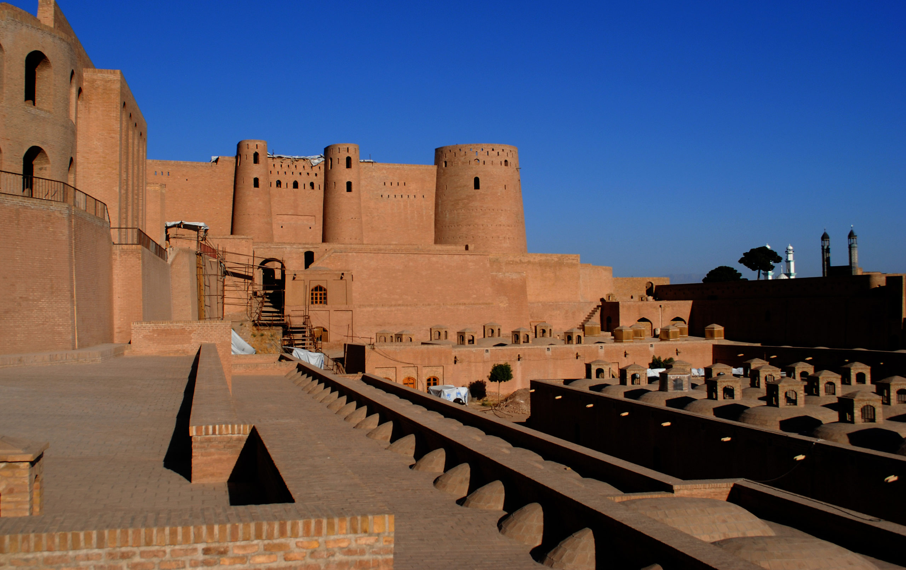
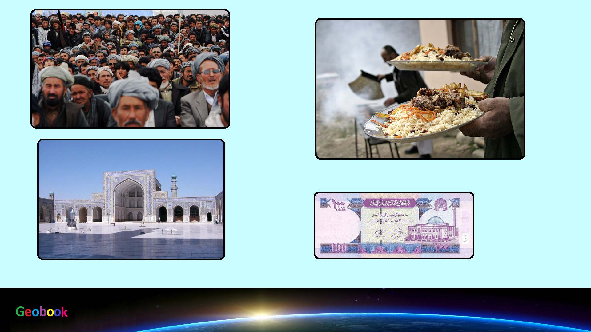

×

Afghanistan
Традиционная еда
Наан — пшеничная лепёшка, блюдо индийской национальной кухни. Кроме того, блюдо имеет широкое распространение в Афганистане, Иране, Непале, Пакистане, Таджикистане, Узбекистане и прилегающих регионах. В тюркских языках хлеб называют нан.
Чапати — хлеб из пшеничной муки, наподобие тонкого лаваша. Распространён в Афганистане, Индии, Непале, Таджикистане, Кыргызстане и других странах.
Каймак — молочный продукт, обычно густые сливки (консистенции от сметаны до сливочного масла).
Курут — тюркский, персидский, а также монгольский сухой кисломолочный продукт из сушёной сузьмы.

Пахлава — восточная сладость в виде пропитанного маслом и сиропом слоёного пирога с начинкой из растёртых орехов, сахара и кардамона.
Фирни — сладкое блюдо из молока и рисовой муки, иногда кукурузной. Имеет консистенцию густого киселя, обычно употребляется холодным.
Халва — восточная сладость из взбитой с пенообразователем карамельной массы и растёртых обжаренных ядер орехов, арахиса, семян масличных культур (подсолнечник, кунжут), с массовой долей жира не менее 25 %. Халвой также называют и другие виды сахаристых кондитерских изделий.
Козлятина — мясо домашней козы (Capra hircus). Один из самых популярных видов красного мяса в Азии и Африке, в том числе благодаря отсутствию религиозных запретов на употребление мяса коз. В Европе и Северной Америке потребление козлятины невелико. Козье мясо — вкусный диетический низкокалорийный продукт, богатый белком и аминокислотами, подходит для всех видов кулинарной обработки.
____
